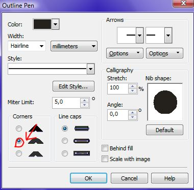

Как сохранить объекты... ?
barnik / 01.08.2008, 00:30/00:41
Форум:
Люди добрые, подскажите пожалуйста, как экспортировать объекты из Corel Draw 11 без сохранения белого фона.
Новичок.
Люди добрые, подскажите пожалуйста, как экспортировать объекты из Corel Draw 11 без сохранения белого фона.
Новичок.
у меня Х4, в 11 сто лет уже не рабоал, но там оно мне и не надо было )
понял, спасибо
barnik, ну для хтмл более грамотно конечно png
или gif с прозрачкой
но я бы напрямую из корела не генерил
универсальный формат eps
импортите в него, растрируете в фотошопе
а уж там сохраняете как хотите - png or gif
а если для флеша - то пересохраненный в иллюстраторе eps с ним очень хорошо дружит.
Я в фотошопе не разбираюсь по-правде сказать. А почему нежелательно генерировать из корела формат eps?
xm, да у меня тот же вопрос возникает, так как я постоянно с корки пнг делаю, и все без косяков, удовлетворяет всем требованиям, вчем тогда разница?
Есть небольшой трабл с корелом когда тебе для веба нужно сохранить, в общем когда ставищь галочку "антиальясинг" (сглаживание) то корел размывает всю картинку включая ее края. То есть по контуру картинки появляется полоса толщиной в один пиксель, а для вэба это иногда катастрофично. Лично я сохраняю в формат psd с прозрачностью и в шопе режу для веба. А лучше всего в епс пересохранить в илюстратор, открыть в фаерворк там подредоктировать и в веб
VVV, за меня прекрасно ответил
а еще я помню прямой ехпорт в растр с аутлайнами не дружит и бьёт их (а на острых углах выдает бесконечные лучи)
VVV, xm, спасибо, даже не знал об этом
На сколько я знаю, из личного опыта, в .eps лучше не экспортировать. Т.к. корел не правильно сохраняет метаданные файла, точнее может и правильно но адобовские программы его не понимают, из-за чего могут возникнуть проблемы.
Если требуется для люстры, то лучше сохранять в .ai. И если надо .eps, то лучше из люстры перегнать в .eps.
Если для шопа то .psd. Только обязательно надо поставить галочки "сохранять слои" и "прозрачность" ("maintain layers" и "transperent bg")
Это ты про что? не встречал такого. Может, что б не было бесконечных лучей имеет смысл ставить галочку в свойствах аутлайна (см. картинку)

Страницы